1016D25 rh cylinder head - r r and replace gasket for versions with air conditioner
- Path
- Procedures > 10 ENGINE > 1016 CYLINDER HEAD/S > 1016D cylinder heads - remove and re-fit > 1016D25 rh cylinder head - r r and replace gasket for versions with air conditioner
- Kind
- repair procedure (removal / refitting; the operation number is the code)
- Applies to
- engines: 2.5 V6, 3.2 V6; all production periods
- Interactive page
- https://sloeber94.github.io/elrnDB-a156/en/#/3237466
Applies to: engines: 2.5 V6, 3.2 V6; all production periods
 Removing
Removing
 Refitting
RefittingPosition the vehicle on the ramp.
Disconnect the battery negative (-) terminal.
 | Name | Connector |
|---|---|---|
- | Battery |
4450B10 Front WHEEL (one) - R.R.
7055B64 Engine compartment DUST shield in front wheel arch (one), left or right - R.R.
7055B54 under-engine guard - r r
Disconnect the lower coolant outlet hose from the radiator and drain the engine coolant.
1092G10 single engine belt r r
1032D12 timing system protective cover(s) - r + r
1076B52 exhaust pipe (one) leaving l/h or r/h exhaust manifold - r + r
- 1072B42 left hand or right hand inlet manifold (one) - r+r
1056B62 l/h and r/h fuel pipe assembly - with injectors - r + r
1. Undo the bolts (1a) and move the connector bracket (1b) fixed to the thermostat aside.
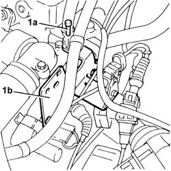
Applies to: engines: 2.5 V6, 3.2 V6; all production periods
1. Disconnect the electrical connection from the combined sender unit for the engine coolant temperature gauge and warning light.
| Name | Connector |
|---|---|---|
1 | Coolant temperature sender unit |
2. Disconnect the electrical connection from the engine coolant temperature sensor.
| Name | Connector |
|---|---|---|
2 | Engine temperature sensor |
3. Undo the bolts (3a) and move the thermostat (3b) aside.
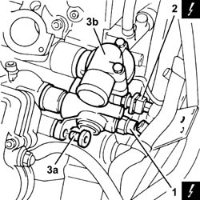
Applies to: engines: 2.5 V6, 3.2 V6; all production periods
1. Disconnect the condensed oil vaopur recovery pipe (1a) and remove the oil vapour separator (1b) complete with pipes.
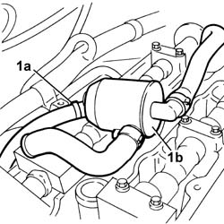
Applies to: engines: 2.5 V6, 3.2 V6; all production periods
1. Undo the bolts (1a) for the camshaft drive pullies for the left and right cylinder heads using the tool (1b) for counter-torque.
 | Name | Country |
|---|---|---|
1b | Counter-torque | 1.822.146.000 |
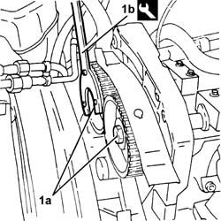
Applies to: engines: 2.5 V6, 3.2 V6; all production periods
1. Remove the camshaft drive pullies for the left and right cylinder heads (1a) using the tool (1b).
| Name | Country |
|---|---|---|
1b | Extractor | 1.860.954.001 |
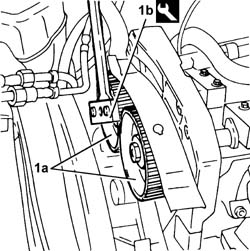
Applies to: engines: 2.5 V6, 3.2 V6; all production periods
1. Undo the bolts (1a) and remove the timing belt fixed tensioners (1b).
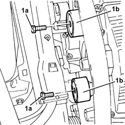
Applies to: engines: 2.5 V6, 3.2 V6; all production periods
1. Undo the bolts (1a) and remove the timing belt rear left protection (1b).
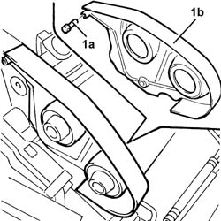
Applies to: engines: 2.5 V6, 3.2 V6; all production periods
1. Undo the bolts (1a) and remove the timing belt right rear protection (1b).
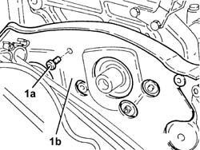
Applies to: engines: 2.5 V6, 3.2 V6; all production periods
1. Undo the bolts (1a) and remove the moving timing belt tensioner (1b).
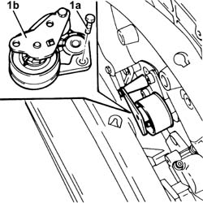
Applies to: engines: 2.5 V6, 3.2 V6; all production periods
1. Undo the bolt (1a) and disconnect the reaction rod (1b) from the mounting bracket on the engine.
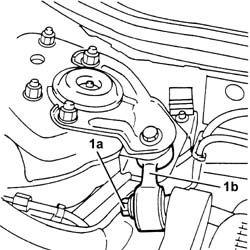
Applies to: engines: 2.5 V6, 3.2 V6; all production periods
1072C34 r/h exhaust manifold - r + r and replace seal
1072B50 sleeves connecting air capacity box to inlet manifold is - r+r
5510C18 right hand cylinder head ignition coil - r+r
1016A34 right-hand cam cover - r + r and replace gasket
1. Undo the nuts (1a) and remove the right cylinder head (1b).
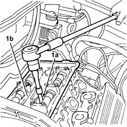
Applies to: engines: 2.5 V6, 3.2 V6; all production periods
1. Remove the right cylinder head gasket.
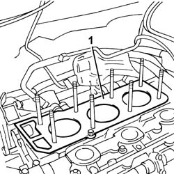
Applies to: engines: 2.5 V6, 3.2 V6; all production periods
1. Fit the cylinder bore/liner locks on the right side.
| Name | Country |
|---|---|---|
1 | Liner/bore holder | 1.820.279.000 |
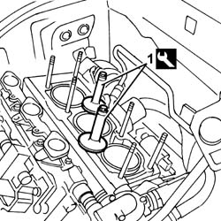
Applies to: engines: 2.5 V6, 3.2 V6; all production periods
Refitting
RemovingRemove the bore/liner locks.
| Name | Country |
|---|---|---|
- | Liner/bore holder | 1.820.279.000 |
Fit a new right cylinder head gasket.
The material from which these gaskets are made undergoes a polymerization process during the operation of the engine so that they become considerably harder during usage.
In order for the polymerization of the gasket to take place it is necessary to:
- keep the gasket in its sealed container until fitting
- not lubricate or get oil on the gasket and the contact surfaces.
Fit the right cylinder head on the cylinder block.
1. Tighten the nuts for the left cylinder head (1a) to the recommended torque using the angular tightening tool (1b).
 | Fastening | Component | Ø | Value (daNm) |
|---|---|---|---|---|
1a | Nut | CYLINDER HEAD | M12 | 2.4 ÷ 2.6 + 240? |
| Name | Country |
|---|---|---|
1b | Protractor | 1.860.942.000 |
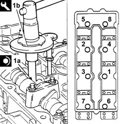
Applies to: engines: 2.5 V6, 3.2 V6; all production periods
1072C34 r/h exhaust manifold - r + r and replace seal
Connect the reaction rod to the mounting bracket on the engine and fix it tightening the bolt to the recommended torque.
| Fastening | Component | Ø | Value (daNm) |
|---|---|---|---|---|
- | Bolt | REACTION ROD | M10 | 4.2 ÷ 5.1 |
Fit the timing belt moving tensioner and fix it using the bolts without tightening them.
Fit the right rear protection for the timing belt and fix it using the bolts.
Fit the timing belt rear left guard and fix it using the bolts.
Fit the timing belt fixed tensioners and fix them tightening the bolts to the recommended torque.
| Fastening | Component | Ø | Value (daNm) |
|---|---|---|---|---|
- | Bolt | FIXED TENSIONER | M10 | 2.8 - 3.2 |
Fit the camshaft drive pullies for the left and right cylinder heads and fix them without tightening the bolts.
Fit the oil vapour separator, complete with pipes, and connect the condensed oil recovery pipe.
Place the thermostat back in its housing and fix it tightening the bolts to the recommended torque.
| Fastening | Component | Ø | Value (daNm) |
|---|---|---|---|---|
- | Bolt | THERMOSTAT | M6 | 0.7 - 0.8 |
Connect the electrical connection to the engine coolant temperature sensor.
Connect the electrical connection to the combined sender unit for the coolant temperature gauge and overheating warning light.
Place the connector bracket back in its housing and fix it to the thermostat using the bolts.
Connect the lower coolant outlet hose to the radiator.
Carry out op. 1016A42 left hand cylinder head ignition coil cover - r+r
Carry out op. 5510C16 left hand cylinder head ignition coil - r+r
Carry out op. 1016A30 left cam cover - r + r and replace gasket
1056B62 l/h and r/h fuel pipe assembly - with injectors - r + r
- 1072B42 left hand or right hand inlet manifold (one) - r+r
1076B52 exhaust pipe (one) leaving l/h or r/h exhaust manifold - r + r
1016A36 left hand and right hand cam cover - r+r
1072B50 sleeves connecting air capacity box to inlet manifold is - r+r
1016A42 left hand cylinder head ignition coil cover - r+r
1032D12 timing system protective cover(s) - r + r
1092G10 single engine belt r r
7055B54 under-engine guard - r r
7055B64 Engine compartment DUST shield in front wheel arch (one), left or right - R.R.
4450B10 Front WHEEL (one) - R.R.
Supply the engine cooling system with the recommended fluid.
 | Type | Component | Name | Qty. |
|---|---|---|---|---|
- | Fluid [l] | ENGINE COOLING CIRCUIT | Mixture 50% Paraflu11 for Alfa Romeo/distilled water | 9.2 |
Connect the negative (-) battery terminal.
Remove the car from the ramps.
Topics linked from this page (20)
- 1016A30 left cam cover - r + r and replace gasket
- 1016A34 right-hand cam cover - r + r and replace gasket
- 1016A36 left hand and right hand cam cover - r+r
- 1016A42 left hand cylinder head ignition coil cover - r+r
- 1032B14 toothed timing belt - r + r for timing adjustment or replacement versions with air conditioner
- 1032D12 timing system protective cover(s) - r + r
- 1056B62 l/h and r/h fuel pipe assembly - with injectors - r + r
- 1072B50 sleeves connecting air capacity box to inlet manifold is - r+r
- 1072C34 r/h exhaust manifold - r + r and replace seal
- 1076B52 exhaust pipe (one) leaving l/h or r/h exhaust manifold - r + r
- 1092G10 single engine belt r r
- 4450B10 Front WHEEL (one) - R.R.
- 5510C14 ignition coil/s - r+r
- 5510C16 left hand cylinder head ignition coil - r+r
- 5510C18 right hand cylinder head ignition coil - r+r
- 7055B54 under-engine guard - r r
- 7055B64 Engine compartment DUST shield in front wheel arch (one), left or right - R.R.
- A1 Battery
- K35 Coolant temperature sender unit
- K45 Engine temperature sensor